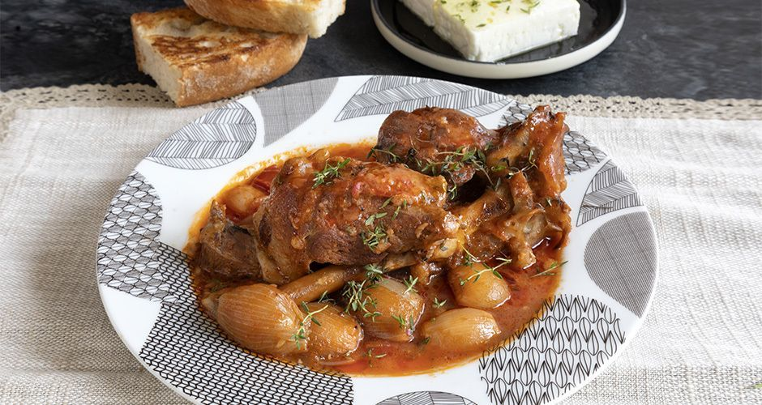

Greek Stifado

Description:Enjoy the fragrance from the cinnamon, bay leaves and all spice while slow-cooking this Greek classic. The meat will melt in your mouth.
Ingredients:
- 1 kg good-quality stewing beef, cut into portions (35 ounces)
- 1.5 kg pearl onions, peeled (60 ounces)
- 1/4 of a cup olive oil
- 3/4 of a cup red wine
- 3 tbsps red wine vinegar
- 1/3 of a cup cognac
- 2 ripe tomatoes (without skins) roughly chopped or tinned (400g) chopped tomatoes (14 oz)
- 1 tbsp tomato paste
- 1 bay leaf
- 3–4 allspice berries
- a pinch nutmeg
- salt and freshly ground pepper
- A bit of water
Steps:
- Place a frying pan over high heat and add 3-4 tablespoons of olive oil.
- In a bowl add the goat, salt, pepper, the flour, and transfer it to the hot pan. Sauté for 4-5 minutes, until browned on all sides.
- At the same time, place a pot over high heat and add 2 tablespoons of olive oil. Add the pearl onions, the garlic, and sauté them until caramelized.
- Add the rosemary, allspice berries, cinnamon sticks, tomato paste, and sauté well.
- Deglaze the pot with the balsamic vinegar, add the sugar and the cumin, and mix.
- Add the canned tomatoes, the water, the goat from the pan, cover with the lid, lower the heat to medium, and boil for 1 ½-2 hours.
- Serve with bread, feta cheese, olive oil, and rosemary.